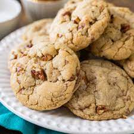

Brown Butter Pecan Cookies
By Kim
The best and delicious cookies you will ever have.

Ingredients
- 11/2 cups chopped peacans
- 1 cup unsalted butter
- 1 cup firmly packed dark brown sugar
- 1/2 cup white sugar
- 1 large egg at room temperature
- 1 large egg yolk
- 2 teaspoons vanilla extract
- 21/2 cups all purpose flour
- 1 teaspoon baking powder
- 1 teaspoon salt
- 1/2 teaspoon baking soda
- 1/4 teaspoon ground nutmeg
Instructions
- Place pecans in a large, light-colored skillet over medium heat. Cook, stirring constantly until pecans are toasted, about 5 minutes. Pour pecans into a small bowl and set aside to cool.
- Wipe out the skillet with a paper towel. Add butter to the skillet, and place it back over medium-low heat. Cook, stirring frequently, until butter begins to brown and smell nutty, 5 to 7 minutes. Pour browned butter into a large mixing bowl and allow to cool for 20 minutes.
- Preheat the oven to 350 degrees F. Line two baking sheets with silicone baking mats or parchment paper.
- Add brown sugar and white sugar to the mixing bowl with cooled browned butter; and mix until combined. Add in egg, egg yolk, and vanilla and mix until thoroughly incorporated. Add in 1 1/4 cups flour, baking powder, salt, baking soda, and nutmeg and mix until just combined. Add in remaining 1 1/4 cups flour and mix until just combined. Stir in toasted pecans. Dough will be somewhat thick.
- Scoop out 3 tablespoons of dough and roll into a ball. Repeat with remaining dough. Place dough balls about 1 1/2 inches apart on prepared baking sheets, and flatten balls to about 1/2-inch thick with the bottom of a glass.
- Bake in the preheated oven until cookies just begin to brown on the bottom, 12 to 15 minutes. Allow cookies to cool on baking sheets for a few minutes before removing to a wire rack to cool completely.
This is one of my favorite recipes because these butter pecan cookies are very delish
Click here for more recipes